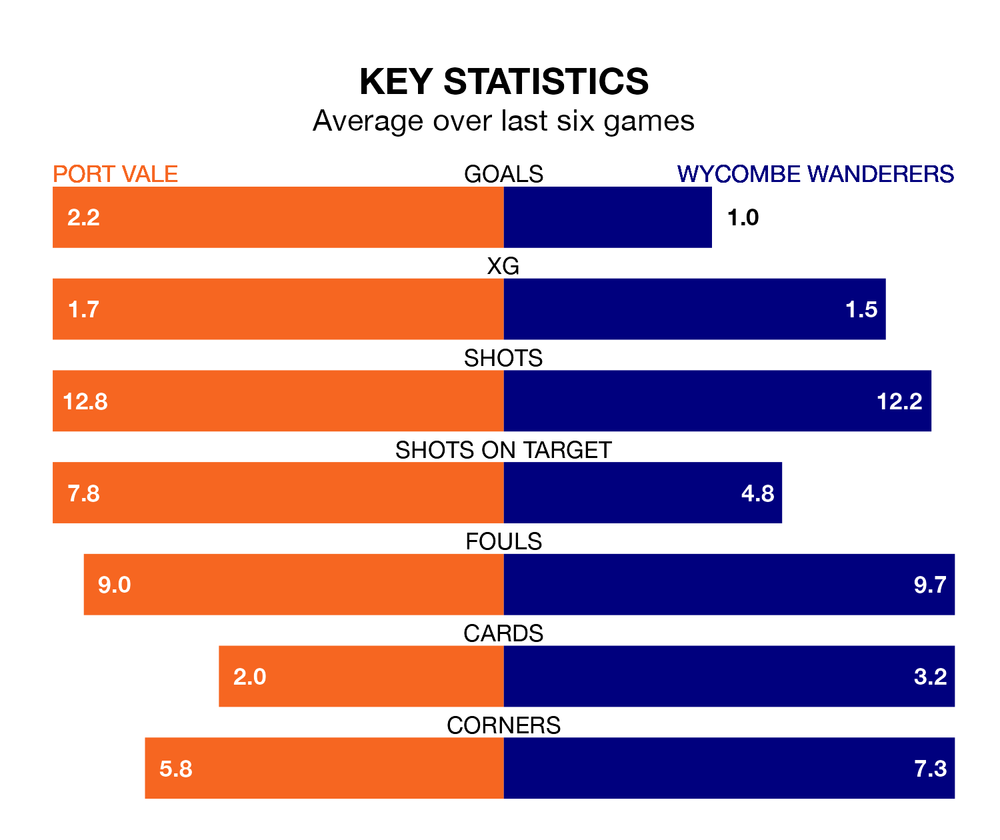

Wycombe Wanderers travel to Port Vale on Saturday in EFL League One.
The visitors come into the game on the back of a draw in their last match, having tied with Lincoln City 1-1 at home, with a goal from Dale Taylor.
The Valiants also drew their last match, 3-3 against Charlton Athletic, with their goals scored by Gavin Massey, Uche Ikpeazu and Ethan Chislett.
With 28 goals in 25 games so far this season, Vale are scoring at below the league average rate with 1.1 goals per game. And they are conceding more than average, letting in 38 goals at a rate of 1.5 per game.
Wycombe are also below average scorers, with 1.2 goals per game, compared to a league average of 1.3. They have conceded 1.3 goals per game.
The Valiants are 17th in the table after 25 games, of which they have won eight and drawn six, earning 30 points.
Wanderers are two places ahead of the hosts in 15th, with seven wins and nine draws putting them on the same number of points.
Vale's Chislett is among the league's most creative players, racking up seven assists in 22 appearances so far this season, and holding third spot in EFL League One's assist charts.
For the Chairboys, Luke Leahy has set up the most goals, having laid on five assists in 24 games.
Vale are in mixed form in EFL League One, with two wins and two draws from their last six games.
With a win and four draws over that period, the away side's form is slightly worse – they have taken seven points from 18, compared to the Valiants's eight.
In the last three years, Vale and Wycombe have played each other on three occasions. Wycombe won one of them and they drew the other.
Their last meeting was on December 23, when they played out a 1-1 draw.
Saturday's match will be refereed by John Busby, who has taken charge of two EFL League One games so far this season, issuing no red cards and booking seven players. He has awarded one penalty.
He is yet to oversee a match featuring either Vale or Wycombe this season.
Updated: 13:09 (UTC), 17/01/24